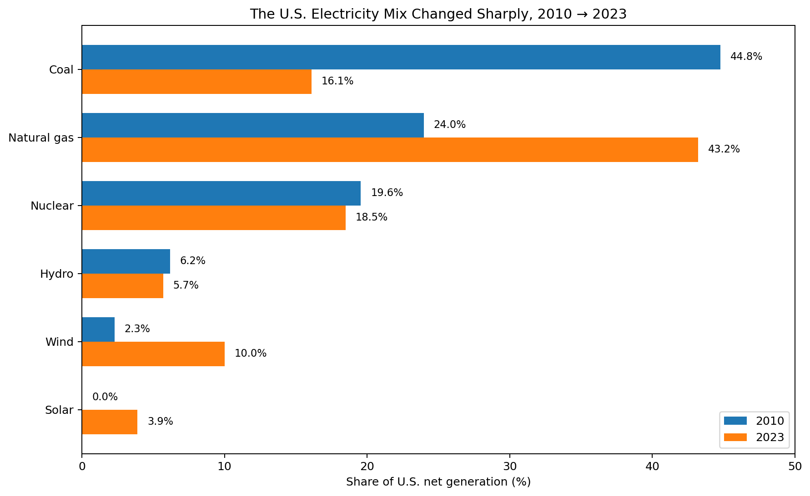
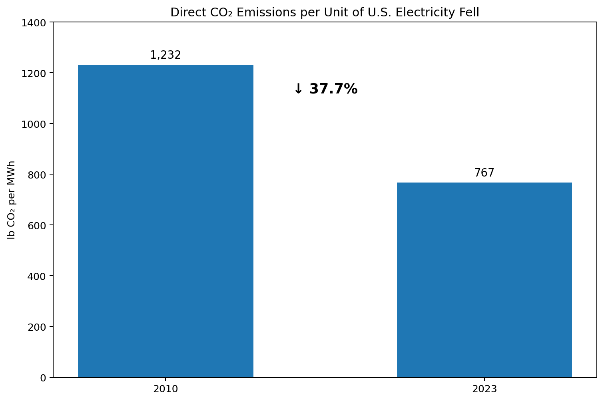

“Cleaner electricity” can sound vague. I made it visible by holding the geographic scale constant and comparing the U.S. grid in 2010 and 2023 using the same EPA eGRID framework.

Coal fell dramatically. Natural gas rose. Wind and solar grew from a very small share to a visible part of national generation. Nuclear remained large, while hydro changed relatively little.
Adding nuclear, hydro, wind, solar, biomass, and geothermal together, these non-fossil sources supplied about 29.8% of eGRID generation in 2010 and about 39.6% in 2023.

Yes. EPA's national eGRID total output CO₂ rate dropped by about 37.7%. This is a direct operational-emissions measure: pounds of CO₂ emitted by generators per megawatt-hour of net electricity generation.
The chart does not prove that one technology alone caused the decline. The mix changed in several ways at once: much less coal, more natural gas, and substantially more wind and solar.
EIA's preliminary 2025 figures show that the broad transition continued. In 2025, natural gas generated about 41% of U.S. utility-scale electricity, coal about 17%, nuclear about 18%, and renewables about 24%. EIA also reports that wind plus solar, including small-scale solar, supplied about 19% of total net generation in 2025.
I keep the main quantitative comparison at 2010 versus 2023 because EPA eGRID provides a directly comparable national generation mix and output-emission-rate framework for both years. The 2025 EIA numbers are shown only as a recent update, not mixed into the eGRID calculation.
Here, “cleaner” means lower direct CO₂ emissions per unit of electricity generated. It does not mean zero environmental impact. This comparison does not include full life-cycle emissions, land use, mining, methane leakage upstream of a power plant, local air pollution, reliability, or electricity prices.
| Measure | 2010 | 2023 |
|---|---|---|
| Coal share | 44.8% | 16.1% |
| Natural gas share | 24.0% | 43.2% |
| Nuclear share | 19.6% | 18.5% |
| Wind share | 2.3% | 10.0% |
| Solar share | 0.03% | 3.9% |
| CO₂ output rate | 1,232.35 lb/MWh | 767.2 lb/MWh |
U.S. EPA eGRID 2010 summary tables: national resource mix and total output emission rate.
U.S. EPA eGRID 2023 summary tables, Revision 2: national resource mix and total output emission rate.
U.S. EIA 2025 update: U.S. generation shares and wind and solar generation.
The included us_grid_2010_2023.csv contains every value used in the charts, and
calculation.py reproduces the headline percentage changes.